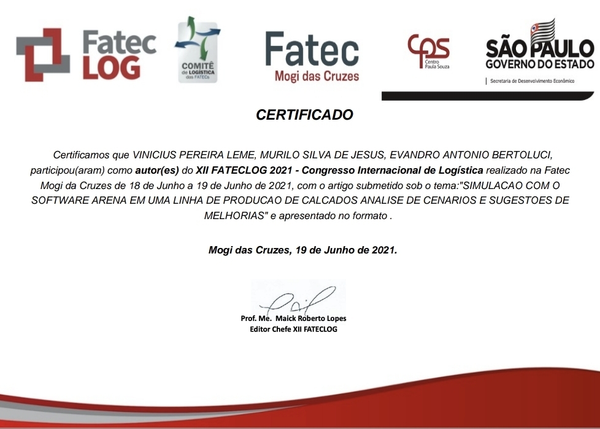
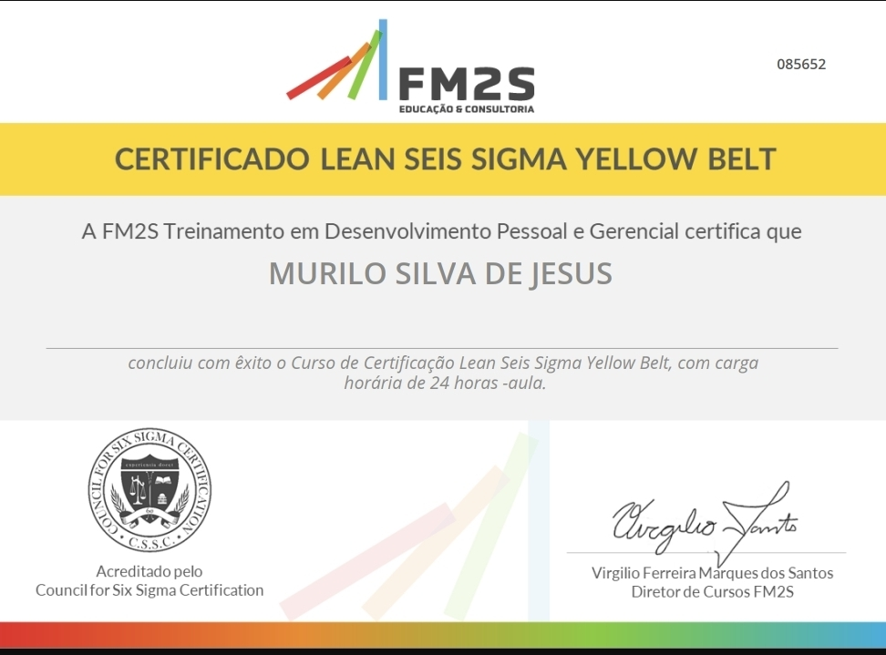
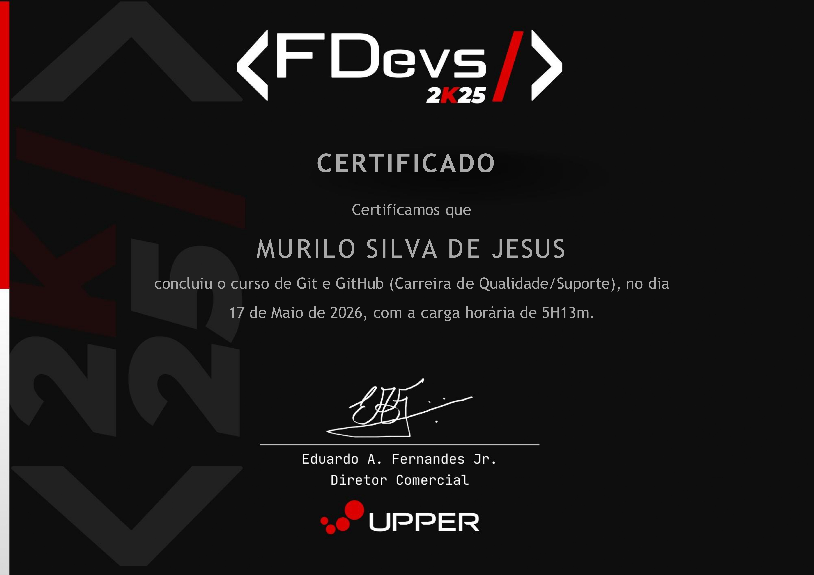

Murilo Silva de Jesus
Sobre
Meu nome é Murilo Silva de Jesus, tenho 33 anos e sou um profissional com experiência consolidada em atendimento ao cliente, suporte administrativo e operações em ambientes industriais, logísticos e comerciais.
Atualmente atuo como Agente de Controle Empresarial na Raízen, desempenhando funções relacionadas ao controle de acesso, organização de dados, elaboração de relatórios e apoio às áreas internas, sempre com foco em eficiência operacional e qualidade das informações.
Sou formado em Gestão da Produção Industrial pela Faculdade de Tecnologia de Jahu - FATEC e estou direcionando minha carreira para a área de Tecnologia da Informação.
Possuo conhecimentos em HTML, CSS, SQL, Git e GitHub além de certificação em Python, Cybersecurity e Lean Six Sigma Yellow Belt, que fortalecem minha visão analítica e orientação para resultados.
Formação
Tecnologia em Gestão da Produção Industrial
Sou formado em Gestão da Produção Industrial pela Faculdade de Tecnologia de Jahu - FATEC e estou direcionando minha carreira para a área de Tecnologia da Informação. Para formalizar essa transição, estou cursando Gestão da Tecnologia da Informação pela FATEC Jahu (conclusão prevista em 2027), com foco em Banco de Dados, Análise de Sistemas e Segurança da Informação. Complementos minha formação com certificações em Python, Cybersecurity , Lean Six Sigma e Gite GitHub
Certificados
Certificado Fateclog

Lean Six Sigma White Belt
Lean Six Sigma Yellow Belt

Python Essentials 1
Introduction to Cybersecurity
Git e GitHub
